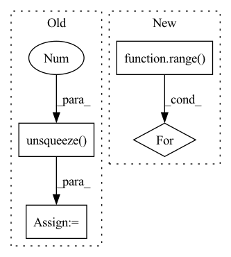

Pattern ID :281
Before Change
xyz, point_features = torch.split(points, [3, 1], dim=-1)
out = [(point_features, xyz)] + out
xyz = xyz.unsqueeze(0 ) .contiguous()
indices = furthest_point_sample(xyz, cfg.n_keypoints).squeeze(0).long()
keypoints = points[indices]
keypoints_xyz, keypoints_features = torch.split(keypoints, [3, 1], dim=-1)After Change
xyz, point_features = torch.split(points, [3, 1], dim=-1)
keypoints_xyz, keypoints_features = self.sample_keypoints(xyz, point_features)
out = [(point_features, xyz)] + out
for i in range( len(self.cfg.strides)) :
voxel_features_i, voxel_coords_i = out[i]
voxel_coords_i = voxel_coords_i.unsqueeze(0).contiguous()
voxel_features_i = voxel_features_i.unsqueeze(0).permute(0, 2, 1).contiguous()
keypoints_xyz = keypoints_xyz.unsqueeze(0).contiguous()In pattern: SUPERPATTERN
Frequency: 3
Non-data size: 4
Instances Fragment ID: 939598
Project Name: jhultman/vision3d
Commit Name: b58d5a394a6cc04a99daeaa04b0ef90f050f8582
Time: 2020-01-17
Author: 27909223+jhultman@users.noreply.github.com
File Name: pvrcnn/main.py
M Class Name: PV_RCNN
N Class Name: PV_RCNN
M Method Name: forward(2)
N Method Name: forward(2)
M Parent Class: nn.Module
N Parent Class: nn.Module
M File Name: pvrcnn/main.py
N File Name: pvrcnn/main.py
M Start Line: 120
M End Line: 130
N Start Line: 143
N End Line: 151
Before Change
// delay in the masking stage.
if not self.pad_specf:
spec = self.pad_spec(spec)
m = self.pad_out(m.unsqueeze(-1 ) ).squeeze(-1)
spec = self.mask(spec, m)
if self.run_df:
df_coefs, _ = self.df_dec(emb, c0)
df_coefs = self.pad_out(df_coefs)
if self.pad_specf:
// Only pad the lower part of the spectrum.
spec_f = self.pad_spec(spec)
spec_f = self.df_op(spec_f, df_coefs)
spec[..., : self.nb_df, :] = spec_f[..., : self.nb_df, :]
else:
spec = self.df_op(spec, df_coefs)
After Change
spec = self.mask(spec, m)
df_coefs, df_alpha = self.df_dec(emb, c0)
for _ in range( self.df_iter) :
if self.use_alpha:
spec = self.df_op(spec, df_coefs, df_alpha)
else:
spec = self.df_op(spec, df_coefs) Fragment ID: 939592
Project Name: rikorose/deepfilternet
Commit Name: 3e554333e5a3f0802f8df5a00e07de517dfe6561
Time: 2022-10-18
Author: h.schroeter@pm.me
File Name: DeepFilterNet/df/deepfilternet2.py
M Class Name: DfNet
N Class Name: DfNet
M Method Name: forward(4)
N Method Name: forward(4)
M Parent Class: nn.Module
N Parent Class: nn.Module
M File Name: DeepFilterNet/df/deepfilternet2.py
N File Name: DeepFilterNet/df/deepfilternet2.py
M Start Line: 428
M End Line: 455
N Start Line: 486
N End Line: 502
Before Change
x = x.view(x.size(0), -1)
// Unsqueeze for sequence length
if t == 0:
gru_output, h_n = self.rnn(x.unsqueeze(1 ) )
else:
gru_output, h_n = self.rnn(x.unsqueeze(1), h_n)
// output dim: BSx1 and Squeeze sequence length after completing GRU stepAfter Change
output_seq = torch.stack(batched_output_per_clip, dim=0)
gru_output, h_n = self.rnn(output_seq.unsqueeze(1))
// gru_output = gru_output.squeeze(1)
for i in range( gru_output.size(0)) :
hr = self.gru_fc_out(gru_output[i, :, :])
// // hr = hr * 25.0
hr_per_clip.append(hr.flatten())
Fragment ID: 939589
Project Name: anweshcr7/rhythmnet
Commit Name: 0f9fc9b96933c04f723fbfa5b80cdf1a398828c3
Time: 2021-03-14
Author: anwesh.marwade@beyondsports.nl
File Name: src/models/rhythmNet.py
M Class Name: RhythmNet
N Class Name: RhythmNet
M Method Name: forward(3)
N Method Name: forward(3)
M Parent Class: nn.Module
N Parent Class: nn.Module
M File Name: src/models/rhythmNet.py
N File Name: src/models/rhythmNet.py
M Start Line: 33
M End Line: 56
N Start Line: 33
N End Line: 64